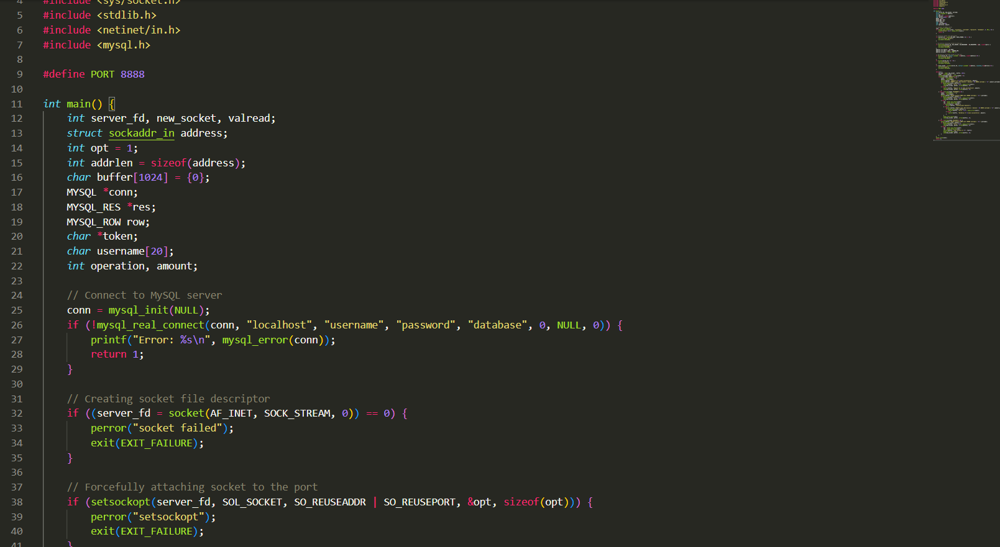
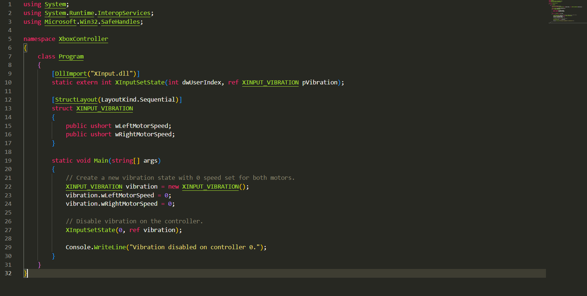

My Projects
As such, more in-depth analyses of my projects can be found on my GitHub profile.
Project 1: Banking Client/Server Application
This program is a very simple and easy to understand use of socket programming and server-client functionality. I only created this project to exemplify my familiarity in network programming and establishing server and client connections. Including functionalities such as generating a unique user ID upon the creation of a username and password login (stored in the server relational database using MySQL) and including functionality for withdrawals, deopsits and checking balance.
Project 2: Haptics Feedback Reducer
For a while I struggled with reducing the haptic feedback on many of my controllers that I use as vibration and related feedbacks degrade the devices internals and can lead to a reduced lifespan. To solve this problem, I wrote a script in C# that disables this feedback on Xbox controllers. I was planning on continuing forward and adding some functionality for button remapping etc. but then I realized that Microsoft actually has an app for such endeavors. Some time in the future I would like to alter this to link the controller as a universal controller to manipulate the cursor and not only be useful in games.